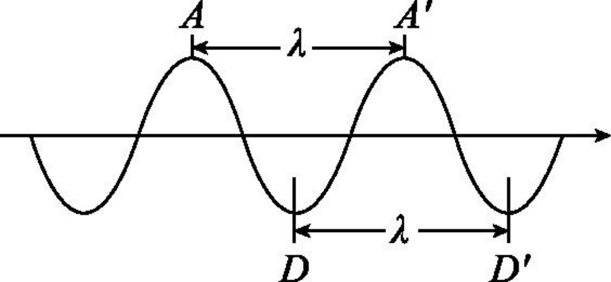
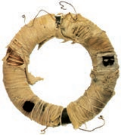
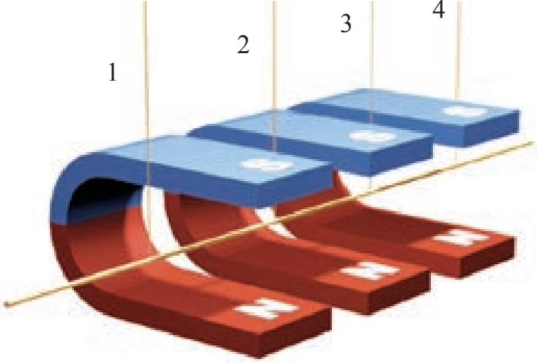
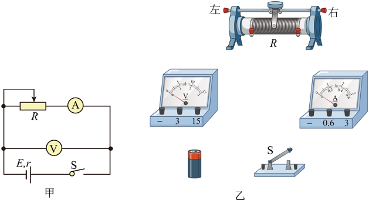

iPhys
隐藏目录
阅读模式
About
iPhys
Categories
All
(15)
电磁学
(12)
电路
(8)
磁场
(4)
答案
(2)
静电场，复习
(1)

电磁波的发现及应用
电磁学
磁场
赫兹通过实验，验证了电磁波的存在
Oct 25, 2024
黄轶凡

电磁感应现象及应用
电磁学
磁场
Video
Oct 21, 2024
黄轶凡

磁感应强度 磁通量
电磁学
磁场
在物理学中，把很短一段通电导线中的电流
I
与导线长度
L
的乘积
IL
叫做
电流元
Oct 16, 2024
黄轶凡
磁场 磁感线
电磁学
磁场
1820 年 4 月，奥斯特偶然地把导线放在指南针的上方，通电时磁针转动了。
Oct 12, 2024
黄轶凡
必修三课后题答案
答案
Oct 12, 2024

实验报告：电池电动势和内阻的测量
电磁学
电路
根据闭合电路欧姆定律
I=\frac{E}{R+r}
，得
E=U+Ir
。改变滑动变阻器的阻值
R
，测出几组
I
、
U
的数值，利用公式或
U-I
图像可以求得电动势
E
和内阻
r
。
Oct 8, 2024
黄轶凡
实验：练习使用多用电表
电磁学
电路
观察欧姆表的刻度特点： 1. 示数左大右小。 2. 电阻
0
刻度对应电流满偏。 3. 不均匀，左密右疏。
Oct 6, 2024
黄轶凡
闭合电路欧姆定律
电磁学
电路
图中小灯泡的规格都相同，两个电路中的电池也相同。多个并联的小灯泡的亮度明显比单独一个小灯泡暗。如何解释这一现象呢？
Sep 22, 2024
黄轶凡
一课一练答案
答案
2024-09-20读数练习
Sep 20, 2024
黄轶凡
电路中的能量转化
电磁学
电路
把六个相同的小灯泡接成如图甲、乙所示的电路，调节变阻器使灯泡正常发光，甲、乙两电路所消耗的总功率分别用
P_{甲}
和
P_{乙}
表示，则下列结论中正确的是
Sep 17, 2024
黄轶凡
实验：导体电阻率的测量
电磁学
电路
构造：主尺、游标尺
Sep 9, 2024
黄轶凡
串联电路和并联电路
电磁学
电路
Sep 5, 2024
黄轶凡
静电场复习
静电场，复习
\int\sin\theta d \theta=\cos\theta
Sep 2, 2024
黄轶凡
导体的电阻
电磁学
电路
物理意义：导体对电流的阻碍作用
Aug 30, 2024
黄轶凡
电源和电流
电磁学
电路
为什么闪电只能存在一瞬，而手电筒中的小灯泡能够持续发光？
Aug 29, 2024
黄轶凡
No matching items